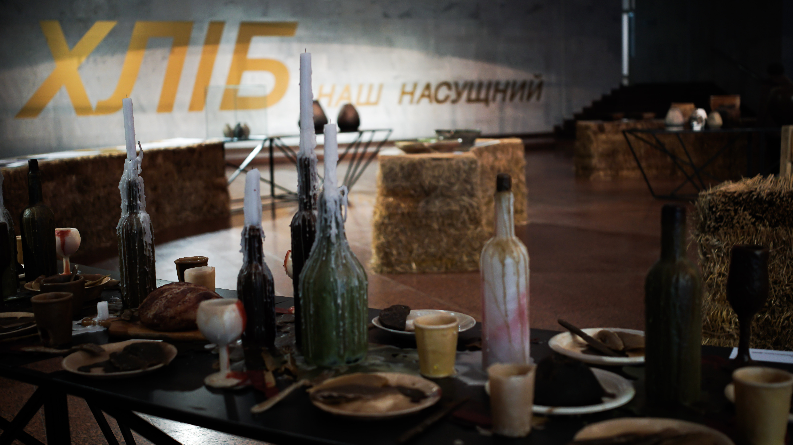

Trapeza
2025
wood, wax, paraffin
Trapeza tells the story of bread as a symbol of togetherness, memory, and spiritual presence. Bread has accompanied humanity for centuries. Its form has changed, yet it has always remained at the heart of human life—at the center of the table. Around the table, traditions are formed, families are sustained, and moments of gathering and farewell unfold.
Throughout history, bread has taken many forms, recipes, and meanings. It has been cherished, shared, and fought over. It has accompanied people in celebration and in grief, in daily labor and in silence.
In Christianity, bread symbolizes sacrifice and transformation. In everyday life, it represents hospitality and respect. In folk traditions, it serves as a blessing—offered to welcome, to honor, and to remember.
Trapeza reflects on bread as a bridge between generations. It carries stories of labor, faith, and shared experience. It evokes a table where different times come together.
This work is about bread as the foundation of every shared meal. It begins conversations, creates warmth, and brings people together. It is a story about community and about passing what matters from hand to hand, from home to home, and from the past into the future.
click to see full size{kind=link}
{kind=link}
{kind=link}
{kind=link}